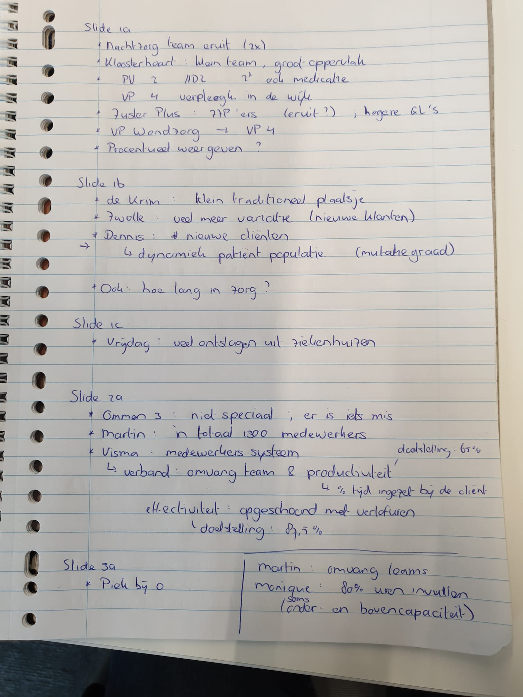

2022-10-20
OAS:
- Implemented common random numbers in simple scheduling simulation. Refactored notebook.
- Kendall’s notation (or sometimes Kendall notation) is the standard system used to describe and classify a queueing node. D. G. Kendall proposed describing queueing models using three factors written A/S/c in 1953[1] where A denotes the time between arrivals to the queue, S the service time distribution and c the number of service channels open at the node. It has since been extended to A/S/c/K/N/D where K is the capacity of the queue, N is the size of the population of jobs to be served, and D is the queueing discipline.[2][3][4]
HCP:
- Gesprek met Carinova >> review data analyses.

Other
- Androniki (Anni) Sapountzi: https://www.davidsilver.uk/teaching/